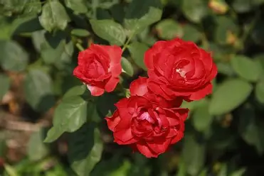

🌹 गुलाब
English Name : Rose
Scientific Name : Rosa spp.

संक्षिप्त परिचय
गुलाब हा जगभरात ओळखला जाणारा एक अतिशय सुंदर व सुगंधी फुलझाड आहे. गुलाबाला फुलांचा राजा असेही म्हटले जाते. गुलाबाचे शास्त्रीय नाव Rosa असे आहे. हा रोसेसी (Rosaceae) कुलातील वनस्पती आहे. गुलाबाची लागवड प्राचीन काळापासून केली जात आहे. भारतात गुलाबाला धार्मिक, सांस्कृतिक व व्यापारी महत्त्व आहे. गुलाबाची झाडे साधारणपणे झुडूप स्वरूपाची असतात. काही जाती वेलीसारख्या वाढतात तर काही उंच झुडूप म्हणून वाढतात. गुलाबाच्या फांद्यांवर काटे असतात. हे काटे झाडाचे संरक्षण करतात. गुलाबाची पाने संयुक्त (compound) प्रकारची असून कडा दातेरी असतात. पानांचा रंग गडद हिरवा व चकचकीत असतो. गुलाबाची फुले विविध रंगांची असतात. लाल, पिवळी, पांढरी, गुलाबी, केशरी व जांभळी अशा अनेक छटांमध्ये गुलाब आढळतो. काही गुलाब सुगंधी असतात तर काहींना कमी सुगंध असतो. गुलाबाची फुले आकाराने मोठी व आकर्षक असतात. फुलांच्या पाकळ्या मऊ व नाजूक असतात. गुलाब वर्षभर फुलतो, परंतु हिवाळ्यात फुलांची संख्या अधिक असते. गुलाबाला येणारे फळ रोज हिप (Rose hip) म्हणून ओळखले जाते. हे फळ लहान, गोलसर व लाल किंवा नारिंगी रंगाचे असते. रोज हिपमध्ये जीवनसत्त्व C मोठ्या प्रमाणात असते. काही ठिकाणी या फळाचा औषधी उपयोग केला जातो. गुलाबाचा वापर धार्मिक कार्यात मोठ्या प्रमाणावर केला जातो. देवपूजेसाठी, हार, फुलांच्या सजावटीसाठी गुलाब वापरला जातो. सण-समारंभ, विवाह व उत्सवांमध्ये गुलाबाला विशेष स्थान आहे. गुलाब प्रेम, सौंदर्य आणि शांतीचे प्रतीक मानला जातो. आयुर्वेदात गुलाबाला महत्त्वाचे स्थान आहे. गुलाबाच्या पाकळ्यांपासून गुलकंद तयार केला जातो. गुलकंद पचनासाठी उपयुक्त मानला जातो. गुलाबपाणी त्वचेसाठी व डोळ्यांसाठी फायदेशीर असते. गुलाब तेल सुगंधी द्रव्यांमध्ये वापरले जाते. गुलाबाचा उपयोग सौंदर्यप्रसाधने, औषधे व खाद्यपदार्थांमध्येही केला जातो. गुलाबाची लागवड बियांद्वारे, कलमांद्वारे व छाट कलमांद्वारे केली जाते. गुलाबाला सुपीक, निचऱ्याची जमीन व भरपूर सूर्यप्रकाश आवश्यक असतो. नियमित पाणी व छाटणी केल्यास गुलाब चांगला फुलतो. बागकामात गुलाबाला विशेष महत्त्व दिले जाते. एकूणच गुलाब हे सौंदर्य, सुगंध, आरोग्य आणि भावनांचे प्रतीक असलेले महत्त्वाचे फुलझाड आहे. त्यामुळेच गुलाबाला मानवी जीवनात अनन्यसाधारण स्थान आहे.
वनस्पतीशास्त्रीय माहिती
🌿 कुल
Rosaceae (रोझेसी कुल)
🌱 रचना
काटेरी खोड असलेले झुडूप
🌼 फुले
मोठी, सुगंधी, विविध रंगांची
🌍 अधिवास
बागा, उद्याने, शेतजमीन